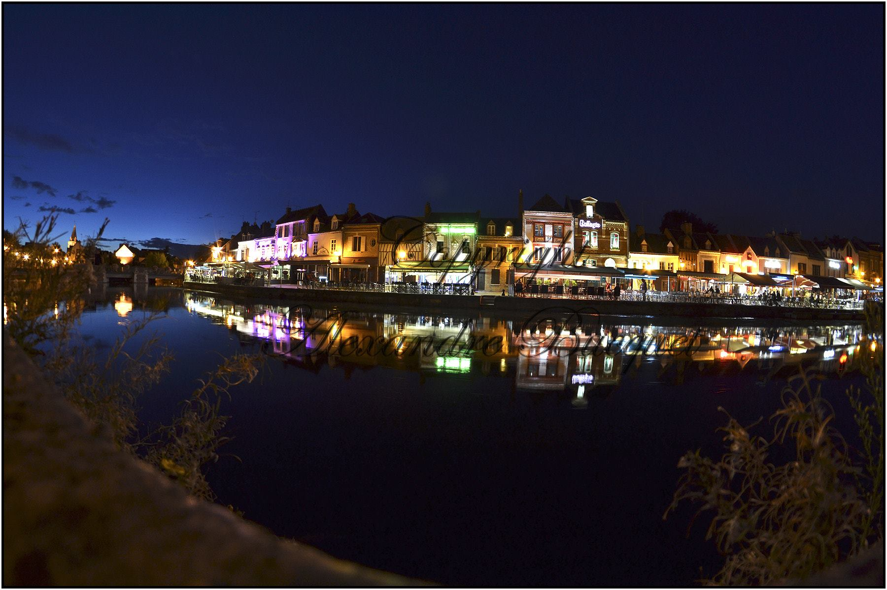
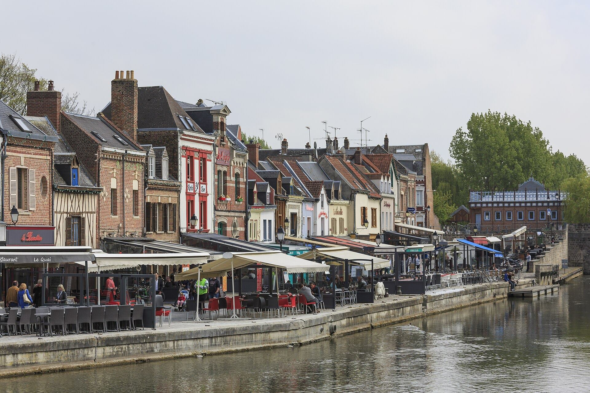
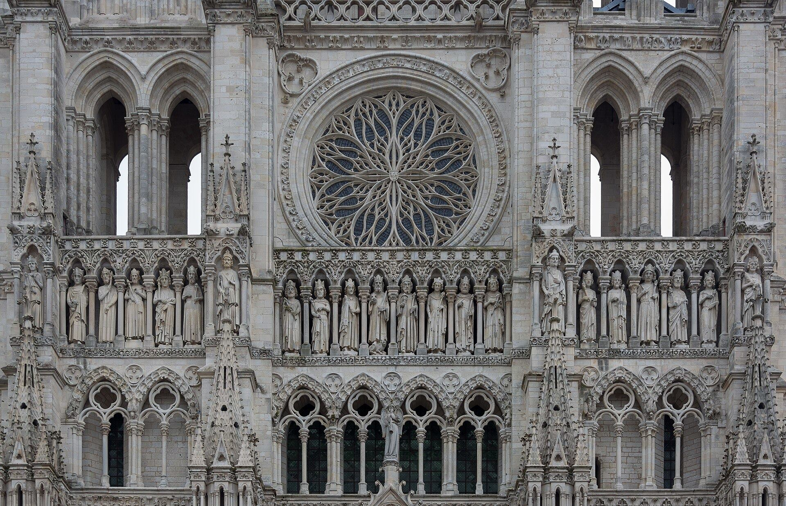
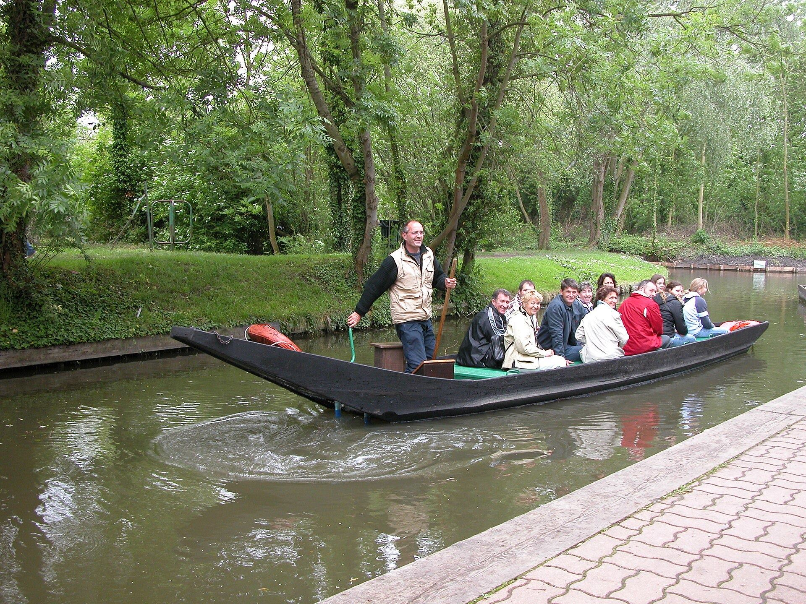
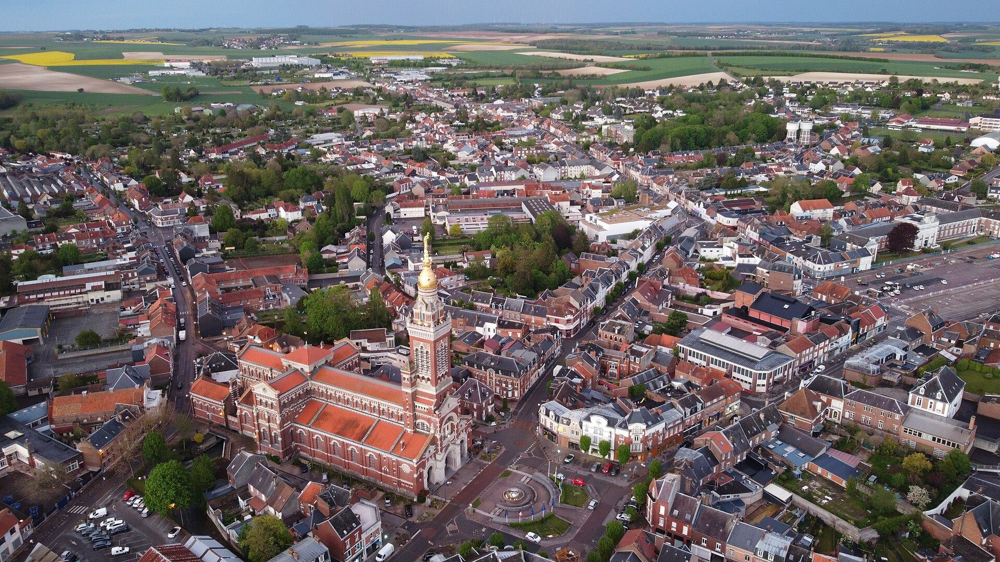
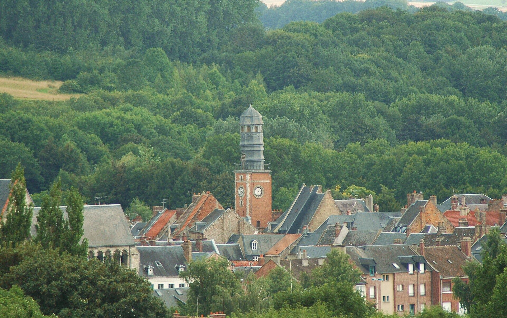
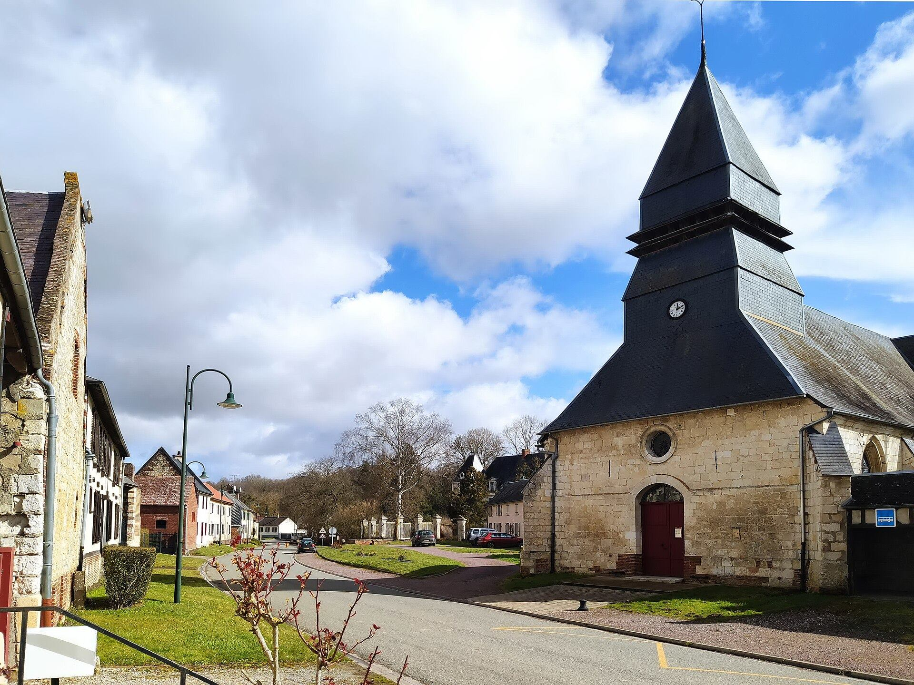
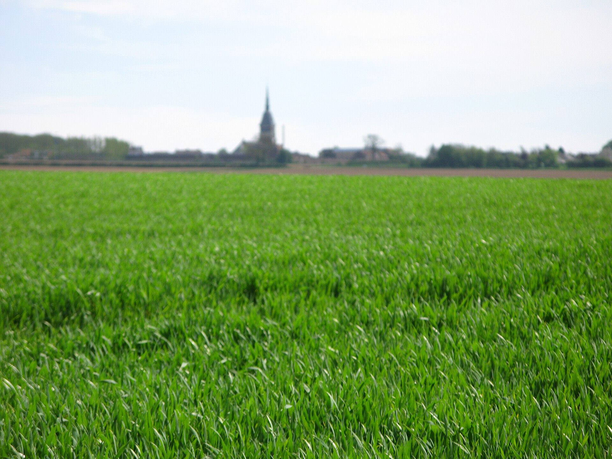
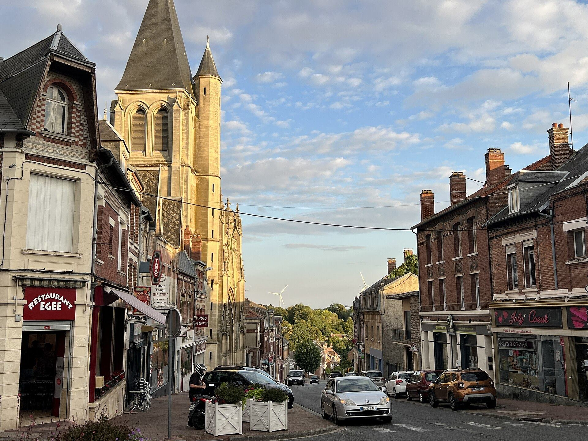

photo_cameraLicences libres
Crédits photos
Les photographies du territoire proviennent de Wikimedia Commons et sont publiées sous licences Creative Commons. Merci à leurs auteurs. Les images ont été recadrées et recompressées pour le web.

Quai Belu de nuit, Amiens
Auteur : Alexandre Bucquet · Licence CC BY 3.0
Source Wikimedia Commons

Quai Belu, quartier Saint-Leu
Auteur : CEphoto, Uwe Aranas · Licence CC BY-SA 3.0
Source Wikimedia Commons

Cathédrale Notre-Dame d'Amiens
Auteur : CEphoto, Uwe Aranas · Licence CC BY-SA 3.0
Source Wikimedia Commons

Visite des Hortillonnages
Auteur : ByB (Wikipédia) · Licence CC BY-SA 3.0
Source Wikimedia Commons

Gare d'Amiens et tour Perret
Auteur : Claude villetaneuse · Licence CC BY-SA 4.0
Source Wikimedia Commons

Albert, basilique Notre-Dame de Brebières
Auteur : UnknownEight · Licence CC BY-SA 4.0
Source Wikimedia Commons

Doullens et son beffroi
Auteur : isamiga76 · Licence CC BY 2.0
Source Wikimedia Commons

Thoix, rue du Village
Auteur : Claude villetaneuse · Licence CC BY-SA 4.0
Source Wikimedia Commons

Plaine du Santerre, Villers-Bretonneux
Auteur : Markus3 (Marc Roussel) · Licence CC BY-SA 3.0
Source Wikimedia Commons

Montdidier, centre-ville
Auteur : Milliped · Licence CC BY-SA 4.0
Source Wikimedia Commons